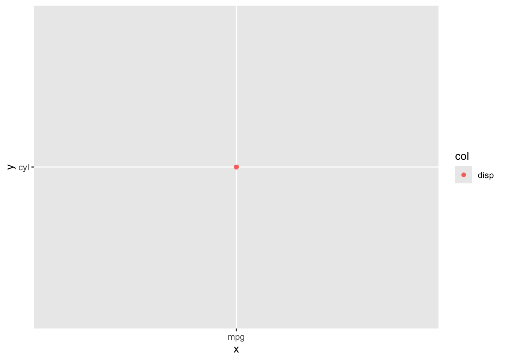
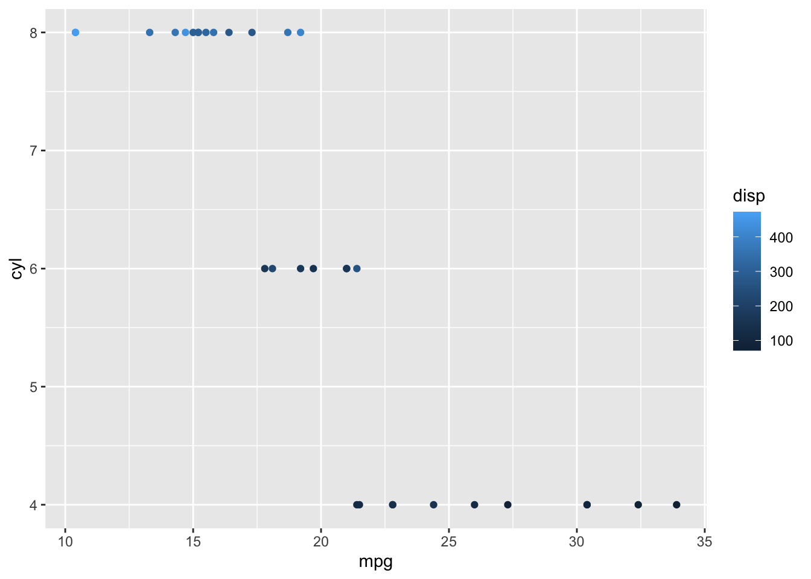

library(ggplot2)
library(dplyr)
my_fun <- function(x, y, col){
ggplot(mtcars,
aes(x = x, y =y , color = col)) +
geom_point()
}
my_fun("mpg", "cyl", "disp")
R, tidyverse
Once we have become deeply immersed in the tidyverse, sometimes we want to write tidy functions. Functions where we can use ggplot() or mutate() but supply arguments to specific columns from a data set. This does not always work. For example, let’s have some fun with mtcars -
library(ggplot2)
library(dplyr)
my_fun <- function(x, y, col){
ggplot(mtcars,
aes(x = x, y =y , color = col)) +
geom_point()
}
my_fun("mpg", "cyl", "disp")
Well that doesn’t look right. Not right at all. And if you do the following:
my_fun(mpg, cyl, disp)That just throws an error.
Now, ggplot in particular has a nice little workaround - aes_string()
my_fun_string <- function(x, y, col){
ggplot(mtcars,
aes_string(x = x, y =y , color = col)) +
geom_point()
}
my_fun_string("mpg", "cyl", "disp")Warning: `aes_string()` was deprecated in ggplot2 3.0.0.
ℹ Please use tidy evaluation idioms with `aes()`.
ℹ See also `vignette("ggplot2-in-packages")` for more information.
But - that still doesn’t work with unquoted variable names. Nor is that a general solution to the problem, as dplyr and friends don’t have *_string functions.
There are a few solultions to this problem. The first is recognizing that tidyverse functions implicitly use . or .data, so we can use this to make a function that works for quoted column names.
my_fun_tidy <- function(x, y, col){
ggplot(mtcars,
aes(x = .data[[x]],
y = .data[[y]],
color = .data[[col]])) + geom_point()
}
my_fun_tidy("mpg", "cyl", "disp")
Convenient. And usable in other contexts. However, you still have to quote your column names. Also, more annoyingly, you have to remember when and where to use . or .data which, I’ll be honest, I forget 90% of the time.
A second solution is to use glue syntax which is now baked into tidy evaluation.
my_fun_quotes <- function(x, y, col){
ggplot(mtcars,
aes_string(x = {{ x }},
y = {{ y }} ,
color = {{ col }})) +
geom_point()
}
my_fun_quotes("mpg", "cyl", "disp")
Nice! It works! And all we have to remember is to wrap our variables in { } for it to work. This still doesn’t solve the unquoted column name problem, though. For that, we need a function from rlang where we tell R that a variable is quoted with enquo. We can then use it as before.
my_fun_enquo <- function(x, y, col){
x <- enquo(x)
y <- enquo(y)
col <- enquo(col)
ggplot(mtcars,
aes_string(x = {{ x }},
y = {{ y }} ,
color = {{ col }})) + geom_point()
}
my_fun_enquo(mpg, cyl, disp)
And there you go! This later will work really well for putting things into tidy workflows. And you don’t have to get deep into thinking about quosures and such, which, TBH, I could never follow/remember the exact sequence and logic of when I wasn’t working with them every single day.